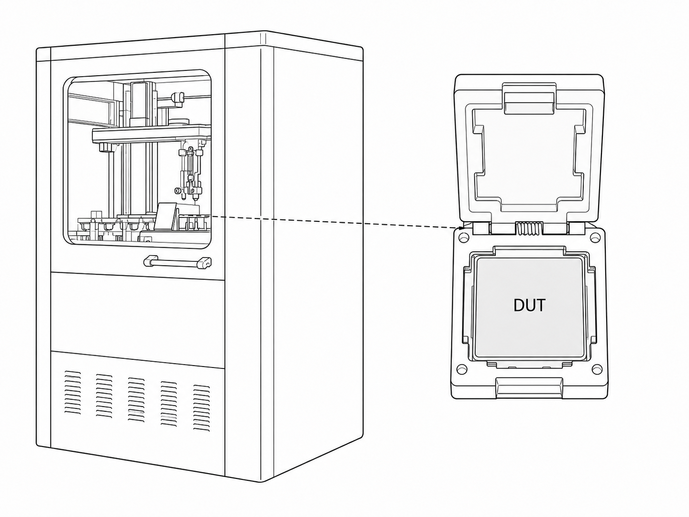

Case 02
Cross-functional Coordination for NAND Test Equipment Deployment
The project focused on bringing a custom NAND test system from initial setup through calibration, verification, and stable routine operation with local vendor support and remote NAND engineering guidance.

Outcome
Core Functions Verified
Critical system functions validated for reliable test operation.
Stable Operation in ~3 Months
Stable operation achieved within the planned three-month window.
Deployment Readiness Achieved
Repeatable routine runs established before scheduled shipment.
Challenge
- Custom test equipment required equipment-specific commissioning
and repeated adjustment during early-stage operation. - Troubleshooting depended on multiple engineering teams
and coordinated input from the local equipment vendor. - On-site troubleshooting relied on timely remote engineering guidance throughout commissioning and issue resolution.
Strategy
- Align — establish shared requirements, responsibilities, and a clear view of current system status.
- Track — maintain visibility of alarms, configuration issues, pending actions, and technical ownership.
- Stabilize — move from commissioning and troubleshooting toward repeatable and reliable routine operation.
My Contribution
- 01
Tracked early setup issues through structured follow-up. Recorded recurring calibration alarms, equipment communication issues, and abnormal system behavior; resolved operator-recoverable problems on site and escalated unresolved items with clear observations and status updates.
- 02
Connected on-site execution with remote NAND guidance. Coordinated day-to-day troubleshooting with the local vendor while sharing system status, alarm details, and test observations with the overseas NAND project lead.
- 03
Supported equipment bring-up and stabilization. Participated in calibration checks, configuration updates, and parameter adjustments as the equipment progressed from initial setup to stable operation.
- 04
Handled routine NAND test operation after stabilization. Performed chip loading, test recipe and parameter setup, routine test runs, and data collection, then reviewed results with the engineering team.
- 05
Tracked verification through closure. Followed remaining setup and verification items through closure and supported readiness confirmation before overseas shipment.